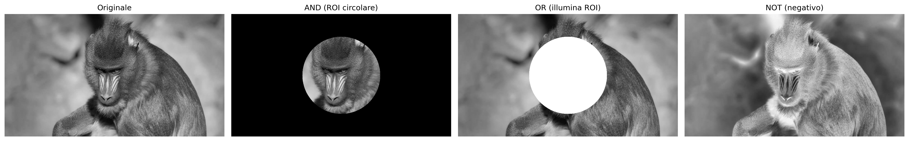
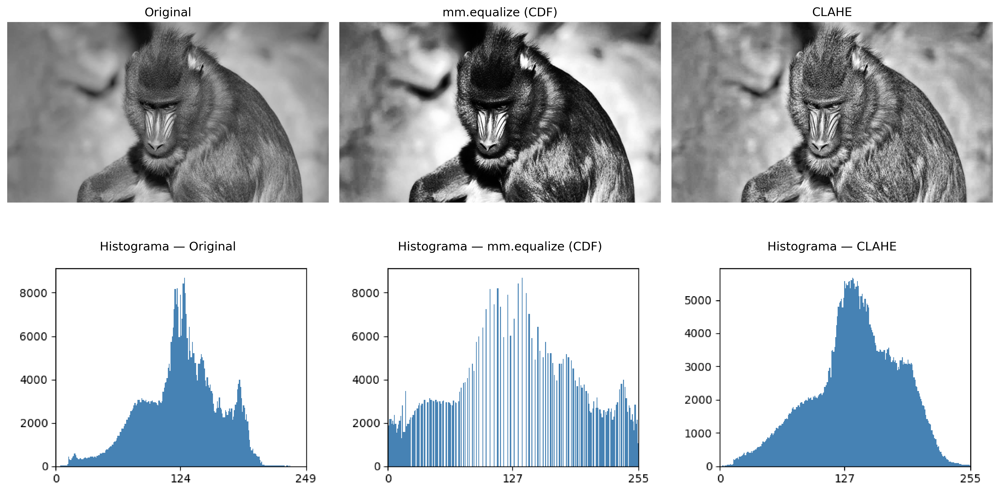
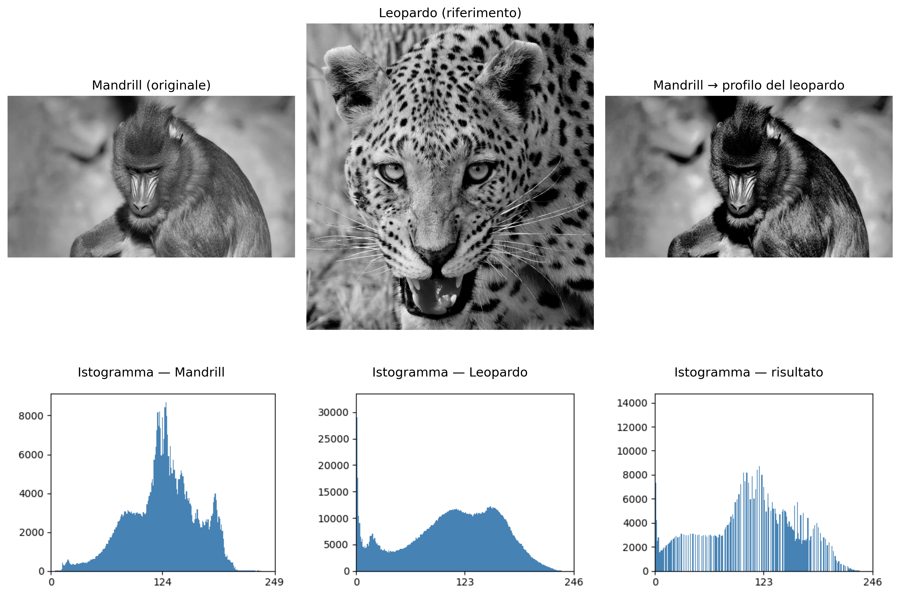
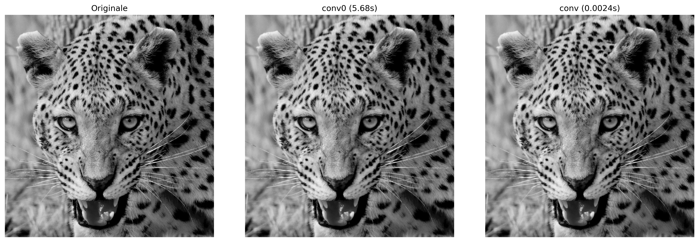
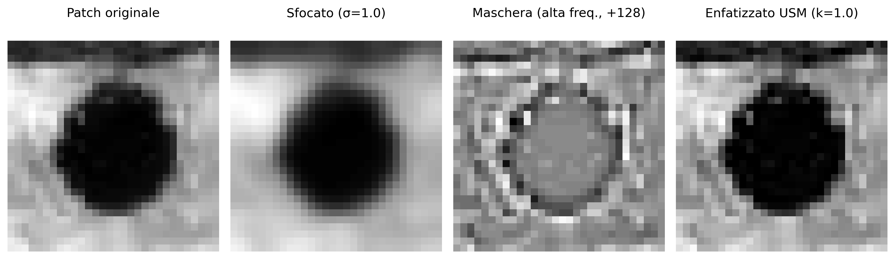

3Operazioni Spaziali: Intensità, Istogramma e Filtraggio
Questo capitolo approfondisce l’elaborazione delle immagini nel dominio spaziale, partendo dalla manipolazione diretta dei pixel e degli istogrammi per l’incremento del contrasto, fino all’applicazione di filtri locali mediante convoluzione per la levigatura, la riduzione del rumore e il rilevamento dei bordi. L’obiettivo è sviluppare l’intuizione matematica e computazionale alla base di gran parte degli algoritmi moderni di Visione Artificiale.
3.1 Obiettivi
Al termine di questo capitolo, sarai in grado di:
Gestire intensità e pixel: Eseguire operazioni aritmetiche sature (mm.addm, mm.subm) e logiche bit a bit (mm.band, mm.bor, mm.bnot) per la combinazione e la selezione di regioni di interesse (ROI), e applicare l’alpha blending (mm.blend) per la fusione ponderata di immagini;
Elaborare istogrammi: Interpretare l’istogramma come diagnosi tonale e applicare l’equalizzazione globale tramite CDF (mm.equalize); nel percorso Python, anche l’equalizzazione adattiva (CLAHE) e la specifica dell’istogramma per il trasferimento del profilo tonale tra immagini;
Comprendere i fondamenti spaziali: Capire il vicinato, il padding dei bordi (mm.pad) e la differenza tra correlazione incrociata (mm.conv) e convoluzione — inclusa la ragione per cui kernel asimmetrici come quello di Sobel producono risultati diversi nelle due operazioni;
Applicare filtri di smoothing: Utilizzare il filtro a media (mm.blur, oppure mm.conv con kernel uniforme) e il filtro Gaussiano (mm.gaussian) per la riduzione del rumore, comprendendo il vantaggio della ponderazione radiale e della separabilità gaussiana;
Applicare filtri di accentuazione: Usare il Laplaciano \(w_4\) e \(w_8\) (mm.laplacian) per l’accentuazione isotropica dei bordi, l’operatore di Sobel (mm.sobel) per la magnitudine del gradiente — e, nel percorso Python, la decomposizione direzionale \(G_x\), \(G_y\) e l’angolo —, e l’Unsharp Masking (mm.usm) per l’amplificazione dell’alta frequenza controllata dal parametro \(k\);
Utilizzare filtri d’ordine: Applicare il filtro mediano (mm.median) per la rimozione del rumore sale e pepe, comprendendo perché la sua natura non lineare e la robustezza agli outlier lo rendono superiore ai filtri lineari in questo scenario;
Risolvere problemi pratici: Collegare tecniche in pipeline di pre-elaborazione (equalizzazione → Gaussiano → Canny; con CLAHE al posto dell’equalizzazione nel percorso Python) e usare le funzioni della morph (mm.conv, mm.histImg, mm.equalize, mm.drawImgKernel) per l’analisi e la visualizzazione didattica di ogni fase.
3.2 Operazioni a Livello di Intensità
Il livello più elementare di elaborazione delle immagini agisce direttamente sui valori dei pixel, senza considerare il vicinato. Queste operazioni — chiamate trasformazioni puntuali (point operations) — sono le più veloci dal punto di vista computazionale e costituiscono la base per tecniche più complesse.
Formalmente, una trasformazione puntuale può essere descritta come:
\[
g(x,y) = T[f(x,y)]
\tag{3.1}\]
dove \(f(x,y)\) è l’immagine di ingresso, \(g(x,y)\) è l’uscita e \(T\) è una funzione applicata a ciascun pixel individualmente.
3.2.1 Preparazione dell’Ambiente Pratico
Il blocco seguente carica la libreria morph dal repository (il modulo morph.py e, nel percorso C++, anche la morph.hpp usata nell’#include delle celle compilate).
Come oggetto di studio lungo questo capitolo, utilizzeremo le immagini di vita selvatica presentate nelle Figura 3.1 e Figura 3.3. A partire da esse, esploreremo operazioni spaziali sull’intensità, istogrammi e filtraggio, analizzando i loro effetti sull’accentuazione, sulla levigatura, sulla riduzione del rumore e sulla rilevazione dei bordi, al fine di comprendere i fondamenti matematici e computazionali dell’elaborazione digitale delle immagini (PDI).
Figura 3.1: Mandrill (Mandrillus sphinx) fotografato in ambiente naturale in Sud Africa. Credito: Carlos Guilherme Rodrigues (CC BY-SA 3.0).
3.2.2 Operazioni Aritmetiche
Le operazioni aritmetiche tra immagini sono ampiamente utilizzate nell’elaborazione digitale delle immagini (PDI) per combinare, confrontare o evidenziare informazioni. La sottrazione di immagini è particolarmente efficace per rilevare differenze tra due fotogrammi — ad esempio, nella rimozione dello sfondo statico nelle telecamere di sorveglianza:
\[
g(x,y) = f_1(x,y) - f_2(x,y)
\tag{3.2}\]
L’addizione saturata limita il risultato all’intervallo \([0, 255]\): i valori superiori a 255 vengono bloccati a 255, evitando l’overflow silenzioso del tipo uint8 (es.: \(200 + 100 = 44\) invece di 300). La sottrazione saturata applica lo stesso principio sul lato inferiore: i valori negativi vengono bloccati a 0.
AvvisoSaturazione e overflow
Le operazioni aritmetiche su uint8 subiscono overflow silenzioso: \(200 + 100 = 44\) (non 300). mm.addm e mm.subm eseguono la saturazione automatica, bloccando il risultato in \([0, 255]\). Il blending utilizza pesi frazionari: mm.blend opera internamente in virgola mobile e solo successivamente arrotonda e satura a uint8.
La Figura 3.2 dimostra l’addizione di una costante (schiarimento) e la sottrazione di una costante (oscuramento con saturazione a 0).
Quando \(\alpha = 1\), si ottiene solo l’immagine \(f_1\); quando \(\alpha = 0\), solo \(f_2\). I valori intermedi producono una transizione fluida tra le due, essendo ampiamente utilizzati nella composizione di immagini, nella sovrapposizione di livelli, nelle filigrane e negli effetti di fusione visiva.
Affinché la combinazione produca un risultato coerente, è necessario allineare preventivamente le regioni di interesse. Nella Figura 3.4, si ritaglia il volto del leopardo con mm.crop(img_leop_gray, 250, H-300, 100, W-200) e la regione facciale del mandrillo con mm.crop(img_gray, 100, 400, 380, 530), in modo che occhi e struttura facciale risultino approssimativamente allineati. Il ritaglio del leopardo viene quindi ridimensionato (mm.resize) alle dimensioni del mandrillo prima della miscela.
mm.blend esegue l’operazione in virgola mobile — evitando overflow nei calcoli con pesi frazionari — e solo successivamente arrotonda e satura il risultato in uint8.
Figura 3.4: Alpha blending tra ritagli allineati del mandrillo e del leopardo (Figura 3.3) per diversi valori di α. Con α=1 si vede solo il mandrillo; con α=0, solo il leopardo; valori intermedi fondono proporzionalmente gli sguardi delle due immagini.
3.2.4 Operazioni Logiche e Maschere Bit a Bit
Le operazioni logiche bit a bit (AND, OR e NOT) agiscono direttamente sui bit di ciascun pixel e costituiscono la base per la creazione e l’applicazione di maschere (masks) — immagini binarie con solo 0 (nero) e 255 (bianco) utilizzate per isolare Regioni di Interesse (ROI).
Il comportamento di ciascuna operazione deriva dalla rappresentazione binaria del 255 (11111111) e dello 0 (00000000):
AND con la maschera: dove \(m = 255\), i bit originali vengono preservati; dove \(m = 0\), il pixel viene azzerato. Risultato: ritaglio della ROI. \[g(x,y) = f(x,y) \;\text{AND}\; m(x,y)
\tag{3.4}\]
OR con la maschera: dove \(m = 255\), il pixel viene forzato al bianco; dove \(m = 0\), il valore originale viene mantenuto. Risultato: illuminazione della ROI.
NOT (senza maschera): inverte tutti i bit (\(g = 255 - f\)), producendo il negativo fotografico dell’immagine.
La Figura 3.5 illustra le tre operazioni applicate all’immagine del mandrillo con una maschera circolare.
h, w = img_gray.shape# Maschera circolare riempita, centrata nell'immagine (mm.circle disegna il# disco; la versione didattica, test del raggio pixel per pixel, è mm.circle0).mask_circ = mm.circle(np.zeros((h, w), dtype=np.uint8), (w //2, h //2), min(h, w) //3-10, 255, -1)# Operazioni via morphimg_not = mm.bnot(img_gray) # NOT: negativo fotograficoimg_and = mm.band(img_gray, mask_circ) # preserva solo la ROI circolareimg_or = mm.bor(img_gray, mask_circ) # illumina la regione della mascheramm.show( [img_gray, img_and, img_or, img_not], titles=["Originale", "AND (ROI circolare)", "OR (illumina ROI)", "NOT (negativo)"], cols=4)

Figura 3.5: Operazioni logiche bit a bit con maschera circolare: AND (isolamento della ROI), OR (illuminazione della ROI) e NOT (negativo).
3.3 Istogramma delle Immagini
L’istogramma di un’immagine in toni di grigio è una funzione discreta che descrive la distribuzione delle frequenze delle intensità:
dove \(r_k\) è il \(k\)-esimo livello di intensità, \(n_k\) è il numero di pixel con quella intensità e \(L\) è il totale dei livelli (tipicamente 256 per 8 bit). L’istogramma normalizzato stima la probabilità di ciascun livello:
\[
p(r_k) = \frac{n_k}{MN}
\tag{3.6}\]
dove \(MN\) è il totale dei pixel. Essendo una statistica globale, l’istogramma non contiene informazioni posizionali, ma rivela caratteristiche essenziali come luminosità media, contrasto e distribuzione tonale. In pratica, mm.hist(img) restituisce il vettore delle frequenze \(h(r_k)\), che serve sia per la visualizzazione (tramite mm.histImg) sia per calcoli come la funzione di distribuzione cumulativa (CDF) e l’equalizzazione.
NotaInterpretazione dell’Istogramma
Stretto a sinistra: immagine sottoesposta (scura).
Stretto a destra: immagine sovraesposta (chiara).
Concentrato al centro: basso contrasto.
Distribuito su tutta la gamma: alto contrasto, buon utilizzo dei toni disponibili.
La Figura 3.6 presenta l’istogramma dell’immagine del mandrillo, insieme a versioni scurita (mm.subm) e schiarita (mm.addm). Si osserva lo spostamento della distribuzione delle intensità rispettivamente verso sinistra e verso destra. Si noti che l’intervallo rappresentato sull’asse \(x\) non corrisponde necessariamente all’intera gamma da 0 a 255.
Figura 3.6: Istogrammi dell’immagine originale, di una versione scurita (−80) e di una schiarita (+80). La sottrazione/addizione satura a 0 e 255.
3.3.1 Equalizzazione dell’Istogramma
L’equalizzazione dell’istogramma ridistribuisce le intensità affinché l’istogramma risultante sia il più uniforme possibile. La mappatura è data dalla funzione di distribuzione cumulativa (CDF):
La trasformazione è monotona: i livelli frequenti ricevono intervalli più ampi nel dominio di uscita (maggiore separazione → maggiore contrasto), mentre i livelli rari vengono compressi.
L’algoritmo completo, in cinque fasi, è presentato nella Tabella 3.1.
Tabella 3.1: Algoritmo di equalizzazione dell’istogramma.
Fase
Operazione
Formula
1
Istogramma
\(h[k] \leftarrow\) numero di pixel con intensità \(k\), \(k=0\ldots L-1\)
\(g[i,j] \leftarrow \text{lut}[f[i,j]]\) (per ogni pixel)
Si noti nella Figura 3.7 che l’equalizzazione ridistribuisce i toni esistenti in posizioni più distanziate nell’intervallo \([0, L-1]\), ma non crea nuovi toni — l’immagine equalizzata continua ad avere esattamente 3 toni distinti, ora in \(\{1, 5, 7\}\) invece di \(\{2, 3, 4\}\).
img5 = np.array([[3, 4, 2, 3, 4], [4, 3, 3, 4, 3], [2, 3, 4, 3, 2], [3, 4, 3, 2, 3], [4, 3, 2, 3, 4]], dtype=np.uint8)L =8# 3 bit: livelli 0..7# 1. Istogramma con dimensione garantita fino a Lh = mm.hist(img5, 3) # B=3 → 2³=8 livelli, dimensione garantitap = h / h.sum() # 2. Probabilità di ogni livello p[k] = h[k] / MNcdf = np.cumsum(p) # 3. CDF normalizzata o# cdf = np.zeros(len(p))# cdf[0] = p[0]# for k in range(1, len(p)):# cdf[k] = cdf[k-1] + p[k] # cdf[k] = Σ p[j], j=0..klut = np.round(cdf * (L -1)).astype(np.uint8) # 4. LUT: mappatura a [0, L-1]img5_eq = lut[img5] # 5. Applica LUT pixel per pixel o, equivalentemente:# l, c = img5.shape# img5_eq = np.zeros((l, c), dtype=np.uint8)# for i in range(l):# for j in range(c):# img5_eq[i, j] = lut[img5[i, j]] # g[i,j] = lut[f[i,j]]print("Immagine originale (5×5, 3 bit):")print(img5)print()header =f"{'k':>3}{'h[k]':>6}{'p[k]':>7}{'CDF[k]':>8}{'lut[k]':>7}"print(header)print("-"*len(header))for k inrange(L):print(f"{k:>3}{h[k]:>6}{p[k]:>7.4f}{cdf[k]:>8.4f}{lut[k]:>7}")print()print("Immagine equalizzata (5×5):")print(img5_eq)# Conta toni distintitons_orig =len(np.unique(img5))tons_eq =len(np.unique(img5_eq))mm.show( [img5, img5_eq, mm.histImg(img5, L-1), mm.histImg(img5_eq, L-1)], titles=[f"Originale ({tons_orig} toni: {sorted(np.unique(img5).tolist())})",f"Equalizzata ({tons_eq} toni: {sorted(np.unique(img5_eq).tolist())})","Istogramma — Originale","Istogramma — Equalizzata"], rows=2, cols=2, figsize=(5, 4), dpi=100)
Figura 3.7: Equalizzazione dell’istogramma in un’immagine 5×5 con 3 bit (L=8): immagine originale con toni concentrati in {2,3,4}, immagine equalizzata con toni redistribuiti in {1,5,7}, e i rispettivi istogrammi che evidenziano la distribuzione delle frequenze.
Limitazione: l’equalizzazione globale può sovra-enfatizzare i rumori e produrre un contrasto eccessivo in regioni omogenee. Il CLAHE (Contrast Limited Adaptive Histogram Equalization) riduce questo problema applicando l’equalizzazione a blocchi locali (tiles) e limitando l’altezza dei picchi dell’istogramma prima dell’equalizzazione.
La Figura 3.8 confronta l’immagine originale, l’equalizzazione globale tramite mm.equalize e il CLAHE di OpenCV, mostrando anche gli istogrammi risultanti. A differenza dell’equalizzazione globale, che utilizza una singola trasformazione basata sulla CDF dell’intera immagine, il CLAHE adatta il contrasto a ciascuna regione, essendo particolarmente utile in immagini con illuminazione non uniforme.
Nell’esempio, sono stati utilizzati clipLimit=2.0 e tileGridSize=(32,32). Il parametro clipLimit definisce quanto i picchi dell’istogramma locale possono crescere prima di essere tagliati (clipped). In OpenCV, questo valore è un fattore relativo: il limite effettivo è approssimativamente calcolato come clipLimit × (numero di pixel del blocco / numero di livelli di grigio). Ad esempio, in un blocco con 4096 pixel e un’immagine a 8 bit (256 livelli di grigio), la frequenza media per livello è \(4096/256=16\). Pertanto, clipLimit=2.0 consente picchi di circa \(2\times16=32\) occorrenze prima del taglio. Le occorrenze eccedenti non vengono scartate: vengono ridistribuite tra gli altri livelli di grigio dell’istogramma, riducendo la concentrazione eccessiva in pochi livelli ed evitando un’amplificazione esagerata del contrasto locale. Valori inferiori limitano maggiormente il contrasto e riducono l’amplificazione del rumore, mentre valori superiori consentono un miglioramento più intenso, ma possono introdurre artefatti.
clipLimit=1.0: miglioramento morbido e conservativo;
clipLimit=2.0: buon equilibrio tra contrasto e naturalezza;
clipLimit=4.0: maggiore enfasi sui dettagli locali;
clipLimit=8.0: contrasto aggressivo, con possibile amplificazione del rumore.
Pertanto, il CLAHE tende a produrre risultati più naturali rispetto all’equalizzazione globale, specialmente in immagini con ombre, riflessi o illuminazione disomogenea.
img_eq = mm.equalize(img_gray)clahe = cv2.createCLAHE(clipLimit=2.0, tileGridSize=(32, 32))img_clahe = clahe.apply(img_gray)images = [img_gray, img_eq, img_clahe]titles = ["Original", "mm.equalize (CDF)", "CLAHE"]mm.show( images + [mm.histImg(img) for img in images], titles=titles + [f"Histograma — {t}"for t in titles], rows=2, cols=3, figsize=(14, 8))

Figura 3.8: Equalizzazione dell’istogramma: mm.equalize (globale tramite CDF) vs. CLAHE (adattativa con limitazione del contrasto). Gli istogrammi rivelano la diffusione progressiva delle intensità.
3.3.2 Specifica dell’istogramma
Mentre l’equalizzazione impone una distribuzione uniforme, la specifica dell’istogramma (histogram matching) consente che l’istogramma dell’immagine di uscita segua una distribuzione arbitraria — ad esempio, l’istogramma di un’altra immagine di riferimento.
La procedura prevede tre fasi:
Calcolare la CDF dell’immagine di ingresso: \(P_r(r_k)\).
Calcolare la CDF dell’immagine di riferimento: \(P_z(z_k)\).
Per ogni livello \(r_k\), trovare il livello \(z\) che minimizza \(|P_z(z) - P_r(r_k)|\).
Nella Figura 3.9, trasferiamo il profilo tonale del leopardo (Figura 3.3) all’immagine del mandrillo — un’applicazione diretta del concetto visto nel blending: invece di fondere i pixel, qui fondiamo le distribuzioni tonali.
# mappa src sul profilo tonale di ref tramite CDFdef hist_specify(src, ref): cdf_src = np.cumsum(mm.hist(src) / src.size) cdf_ref = np.cumsum(mm.hist(ref) / ref.size) lut = np.array([np.argmin(np.abs(cdf_ref - v)) for v in cdf_src], dtype=np.uint8)return lut[src]img_spec = hist_specify(img_gray, img_leop_gray)mm.show( [img_gray, img_leop_gray, img_spec, mm.histImg(img_gray), mm.histImg(img_leop_gray), mm.histImg(img_spec)], titles=["Mandrill (originale)", "Leopardo (riferimento)", "Mandrill → profilo del leopardo","Istogramma — Mandrill", "Istogramma — Leopardo", "Istogramma — risultato"], rows=2, cols=3, figsize=(12, 9))

Figura 3.9: Specifica dell’istogramma: mandrillo mappato sul profilo tonale del leopardo. La CDF dell’output approssima la CDF di riferimento.
3.4 Fondamenti Spaziali: Vicinato, Convoluzione e Kernel
Le operazioni di filtraggio spaziale non agiscono su un singolo pixel isolato, ma su un vicinato circostante. A tale scopo, si utilizza una piccola matrice di coefficienti chiamata kernel (o maschera), che scorre l’intera immagine attraverso una finestra scorrevole (sliding window).
Le finestre più comuni sono 3×3, 5×5 e 7×7. In una finestra 3×3, ad esempio, il pixel centrale viene elaborato insieme ai suoi otto vicini immediati. In ogni posizione della finestra, i valori dei pixel vengono combinati con i coefficienti del kernel, producendo un nuovo valore per il pixel centrale.
3.4.1 Vicinato
Si consideri una finestra 3×3 centrata sul pixel \((x,y)\):
In generale, una finestra di dimensioni \((2a+1)\times(2b+1)\) comprende tutti i pixel situati fino a \(a\) posizioni in orizzontale e fino a \(b\) posizioni in verticale rispetto al pixel centrale. Pertanto, una finestra 3×3 corrisponde a \(a=b=1\), una finestra 5×5 a \(a=b=2\), e così via.
I pixel vicini ai bordi hanno parte del loro intorno al di fuori dell’immagine. Per applicare filtri in queste regioni, è necessario definire come verranno ottenuti i valori esterni. Le tre strategie più comuni (con la costante equivalente di OpenCV tra parentesi) sono:
Zero-padding (BORDER_CONSTANT): completa la regione esterna con zeri.
Replicazione (BORDER_REPLICATE): ripete il valore del pixel del bordo.
Riflessione (BORDER_REFLECT_101): riflette i pixel vicini, senza ripetere quello del bordo.
mm.conv usa la riflessione per impostazione predefinita, poiché preserva meglio la continuità dei livelli di grigio e riduce gli artefatti nel trattamento dei bordi.
L’esempio seguente confronta le tre strategie con mm.pad su una matrice 3×3. Osserva come ciascuna riempie i pixel esterni necessari per applicare un filtro 3×3 anche agli angoli.
img = np.array([ [1, 2, 3], [4, 5, 6], [7, 8, 9]], dtype=np.uint8)bordas = ["constant", "replicate", "reflect101"]print("Immagine originale:")print(mm.drawImg(img))for k in [3, 5]: b = k //2print(f"=== Kernel {k}x{k} (padding b={b}) ===")for nome in bordas:print(nome)print(mm.drawImg(mm.pad(img, b, border=nome)))
Si noti che il risultato di un filtro può variare in modo significativo a seconda del trattamento adottato per i bordi dell’immagine.
Nella libreria didattica morph.py, gli algoritmi implementati direttamente in Python (senza OpenCV o scikit-image) — le varianti con suffisso 0, come mm.conv0 — non utilizzano padding. Per ogni pixel, gli elementi del vicinato vengono esaminati singolarmente, e solo i vicini le cui coordinate appartengono al dominio dell’immagine partecipano al calcolo. Pertanto, nelle regioni prossime ai bordi, il vicinato effettivo può contenere meno pixel rispetto alla finestra specificata; negli operatori basati su mm._viz (ad esempio mm.laplacian), i pixel di bordo con finestra incompleta vengono lasciati invariati.
3.4.3 Correlazione vs. Convoluzione
Esistono due meccanismi matematicamente correlati.
Correlazione incrociata (cross-correlation) — il kernel viene applicato direttamente:
Per kernel simmetrici (Gaussiano, Laplaciano, media) le due operazioni producono risultati identici. Per kernel asimmetrici (Sobel, Prewitt) la differenza è significativa, come mostrano gli esempi seguenti.
La convoluzione utilizza il kernel ruotato di 180°. Per riprodurre la definizione matematica di convoluzione, si ruota il kernel (qui, [[0,1,2],[0,0,0],[0,0,0]] → [[0,0,0],[0,0,0],[2,1,0]]) prima di applicare mm.conv.
3.4.4 Il Ruolo del Kernel
I coefficienti del kernel determinano completamente l’effetto prodotto dal filtro, come riassunto nella Tabella 3.2.
Tabella 3.2: Interpretazione tipica dei coefficienti del kernel.
Caratteristica
Effetto tipico
Coefficienti positivi con somma 1
Smussamento (passa-basso)
Somma pari a 0, con valori positivi e negativi
Rilevamento dei bordi (passa-alto)
Coefficiente centrale positivo dominante e vicini negativi
La Figura 3.10 dimostra il meccanismo passo passo: per ogni posizione della finestra, si moltiplica ciascun coefficiente del kernel per il pixel corrispondente del vicinato e si sommano i prodotti ottenuti. Il risultato è esattamente il valore definito dalla Equazione 3.11 per quella posizione dell’immagine. Sebbene le immagini prodotte da mm.conv0 e cv2.filter2D (o mm.conv) siano visivamente molto simili, l’implementazione basata su OpenCV è migliaia di volte più veloce, come mostrato di seguito.
AvvisoPrestazioni: cicli Python vs. operazioni vettorializzate
La funzione mm.conv0 implementa la correlazione direttamente in Python tramite cicli annidati. Sebbene questo approccio sia adeguato a fini didattici, esso esegue un gran numero di operazioni e diventa lento per immagini più grandi.
Invece, mm.conv utilizza cv2.filter2D, implementato in C++ e ottimizzato per operazioni matriciali. Nell’esempio presentato, la versione vettorializzata è risultata oltre 3000 volte più veloce rispetto all’implementazione didattica, producendo un risultato visivamente equivalente.
Le differenze numeriche osservate si concentrano principalmente sui bordi dell’immagine. In mm.conv0, i pixel del bordo rimangono invariati, mentre mm.conv utilizza una strategia di riflessione dei bordi (cv2.BORDER_REFLECT_101, standard di cv2.filter2D).
Pertanto, mm.conv0 dovrebbe essere usata per comprendere l’algoritmo, mentre mm.conv è l’opzione consigliata per applicazioni pratiche.
Patch 5×5 (intensità):
[[ 91 95 108 116 114]
[106 107 108 111 114]
[102 103 107 112 116]
[ 83 90 111 125 123]
[ 79 88 110 126 124]]
Kernel 3×3 di media:
[[0.11111111 0.11111111 0.11111111]
[0.11111111 0.11111111 0.11111111]
[0.11111111 0.11111111 0.11111111]]
Correlazione nel pixel centrale [1,1]: 103.0 (originale: 107)
Tempi sull'immagine 1324x1242:
mm.conv0 (cicli Python): 5.681 s
mm.conv (cv2.filter2D): 0.00235 s
Accelerazione: 2417× più veloce
Differenza massima: 39 (bordi con padding diverso)

Figura 3.10: Correlazione con kernel di media 3×3: versione didattica (mm.conv0) vs. vettorizzata (mm.conv via cv2.filter2D). La differenza massima di 39 si verifica ai bordi.
3.4.5 Esempio Numerico: Correlazione Passo per Passo
Per rendere concreto il meccanismo della Equazione 3.11, si consideri il kernel di media 3×3 (\(a=b=1\), tutti i coefficienti \(= 1/9 \approx 0{,}111\)) applicato al patch 5×5 estratto dall’immagine del leopardo. La Figura 3.11 mostra il patch con griglia e evidenzia in giallo la finestra 3×3 centrata sul pixel \([1,1]\):
Figura 3.11: Patch 5×5 estratto dall’immagine del leopardo (posizione [250:255, 250:255]). La finestra gialla evidenzia l’intorno 3×3 centrato sul pixel [1,1] dove verrà calcolata la correlazione.
Per illustrare il calcolo della correlazione, si consideri il pixel nella posizione \([1,1]\) del patch 5×5 mostrato nella Figura 3.11.. Questa posizione è stata scelta solo per convenienza didattica, poiché possiede un intorno 3×3 completo attorno a sé.
I valori di tale intorno corrispondono alla sottomatrice in alto a sinistra del patch:
Il risultato (103) è leggermente inferiore al valore originale del pixel centrale (107), poiché la media incorpora vicini di minore intensità, producendo l’effetto di smussamento. In pratica, l’algoritmo avvia l’elaborazione in \([0,0]\) e ripete questo stesso calcolo per ogni posizione dell’immagine, spostando la finestra fino a coprire l’intero dominio.
3.5 Filtraggio Spaziale di Smussamento
I filtri di smussamento (smoothing filters) attenuano le variazioni brusche di intensità, riducendo il rumore e i dettagli ad alta frequenza. Sono filtri passa-basso — preservano le componenti a bassa frequenza (strutture grandi) e attenuano quelle ad alta frequenza (rumore, bordi).
3.5.1 Filtro della Media (Box Filter)
Il filtro della media utilizza un kernel uniforme di dimensione \(n \times n\), in cui tutti i coefficienti valgono \(1/n^2\):
Ogni pixel in uscita è la media aritmetica degli \(n^2\) pixel del suo intorno. Si noti che la somma dei coefficienti è sempre 1 — la luminosità media dell’immagine viene preservata. Kernel più grandi producono uno smussamento più aggressivo, ma sfocano progressivamente i bordi.
La Figura 3.12 mostra l’effetto del filtro a media con kernel\(3\times3\), \(7\times7\) e \(15\times15\) su un dettaglio dell’immagine del leopardo. I risultati sono stati ottenuti con mm.blur, che implementa il filtro a media tramite la funzione cv2.blur, equivalente alla convoluzione dell’immagine con un kernel uniforme i cui coefficienti sono \(h(x,y)=1/N^2\); in modo equivalente, lo stesso risultato può essere ottenuto con mm.conv, calcolando (\(g=f*h\)). Man mano che il kernel aumenta, più pixel contribuiscono a ogni valore di uscita, intensificando la levigatura, riducendo il rumore e rendendo i dettagli fini e i bordi progressivamente più sfocati.
# Dettaglio della regione dell'occhioy0, y1, x0, x1 =580, 740, 680, 900crop =lambda img: img[y0:y1, x0:x1]img_gray_crop = crop(img_gray)sizes = [3, 7, 15]imgs = [img_gray_crop] +\ [mm.blur(img_gray_crop, k) for k in sizes] # o#[mm.conv(img_gray_crop, np.ones((k,k), dtype=np.float32)/(k*k)) for k in sizes]titles = ["Original"] + [f"Média {k}×{k}"for k in sizes]mm.show(imgs, titles=titles, cols=4)
Figura 3.12: Filtro medio con kernel di dimensione crescente (3×3, 7×7, 15×15). La sfocatura dei bordi aumenta con la dimensione del kernel.
3.5.2 Filtro Gaussiano
Il filtro gaussiano pesa i pixel del vicinato secondo una funzione gaussiana bidimensionale:
dove \(\sigma\) è la deviazione standard e controlla il raggio di influenza. I pixel più vicini al centro hanno peso maggiore; i pixel distanti vengono progressivamente ignorati.
La Figura 3.13 presenta il kernel gaussiano \(5\times5\) generato per \(\sigma=1\). Il kernel è stato costruito a partire dal prodotto esterno di due vettori gaussiani unidimensionali e successivamente normalizzato affinché la somma dei suoi coefficienti sia uguale a \(1\). Si osserva che i pesi maggiori si concentrano al centro della matrice, decrescendo radialmente verso i bordi. Questa distribuzione fa sì che i pixel centrali abbiano maggiore influenza sul risultato del filtraggio, contribuendo a un livellamento più naturale e con una migliore preservazione dei bordi rispetto al filtro medio.
# Genera kernel Gaussiano 5×5 tramite cv2k_gauss = cv2.getGaussianKernel(5, 1)w_gauss = k_gauss @ k_gauss.T # @ => moltiplicazione matriciale: G(s,t) = G(s)·G(t)w_gauss = w_gauss / w_gauss.sum() # garantisce somma = 1print("Kernel Gaussiano 5×5 (σ=1), normalizzato:")for row in w_gauss:print(" "+" ".join(f"{v:.4f}"for v in row))print(f"\nSomma dei coefficienti: {w_gauss.sum():.6f}")print(f"Peso centrale vs. angolo: {w_gauss[2,2]:.4f} vs. {w_gauss[0,0]:.4f} "f"({w_gauss[2,2]/w_gauss[0,0]:.1f}× maggiore)")mm.drawImgPlt((w_gauss *1000).astype(np.uint8), scale=40)
Kernel Gaussiano 5×5 (σ=1), normalizzato:
0.0030 0.0133 0.0219 0.0133 0.0030
0.0133 0.0596 0.0983 0.0596 0.0133
0.0219 0.0983 0.1621 0.0983 0.0219
0.0133 0.0596 0.0983 0.0596 0.0133
0.0030 0.0133 0.0219 0.0133 0.0030
Somma dei coefficienti: 1.000000
Peso centrale vs. angolo: 0.1621 vs. 0.0030 (54.6× maggiore)
Figura 3.13: Kernel Gaussiano 5×5 (σ=1): pesi normalizzati, maggiori al centro e decrescenti radialmente. La griglia facilita la lettura di ogni coefficiente.
NotaVantaggio computazionale della separabilità
Si consideri un kernel quadrato di dimensione \(n \times n\). Se questo filtro è separabile (come quello gaussiano), la convoluzione 2D può essere decomposta in due convoluzioni 1D: una orizzontale e una verticale.
In questo caso, il costo per pixel passa da circa \(O(n^2)\) operazioni (convoluzione 2D diretta) a \(O(2n)\) operazioni (due convoluzioni 1D). La complessità viene così ridotta in modo significativo, rendendo l’elaborazione più efficiente.
Rispetto al filtro a media, il filtro gaussiano:
Preserva meglio i bordi — la ponderazione radiale smussa senza creare transizioni brusche;
Non introduce anelli (ringing) nel dominio della frequenza, poiché la gaussiana è la sua stessa trasformata di Fourier (Capitolo 5);
È controllato da \(\sigma\) — aumentare \(\sigma\) equivale ad aumentare il raggio di smussatura in modo continuo e prevedibile.
La Figura 3.14 confronta i filtri media e gaussiano applicati all’immagine del leopardo utilizzando una finestra \(9\times9\). Il filtro media è stato implementato mediante convoluzione con un kernel uniforme, in cui tutti gli \(81\) pixel del vicinato possiedono lo stesso peso (\(1/81\)), mentre il filtro gaussiano è stato ottenuto con cv2.GaussianBlur, utilizzando pesi definiti da una distribuzione gaussiana. Entrambi riducono il rumore e smussano l’immagine, ma il filtro gaussiano preserva meglio i bordi e i dettagli locali, come si può osservare nella regione ingrandita dell’occhio.
La Figura 3.14 confronta i filtri media e gaussiano applicati a un dettaglio dell’immagine del leopardo con kernel\(9\times 9\). Il filtro media è stato ottenuto con mm.blur, equivalente alla convoluzione con un kernel uniforme i cui coefficienti valgono \(1/81\), mentre il filtro gaussiano è stato ottenuto con mm.gaussian, equivalente alla convoluzione con un kernel generato a partire da una distribuzione gaussiana. Entrambi promuovono smussamento e riduzione del rumore, ma il filtro gaussiano attribuisce un peso maggiore ai pixel centrali del vicinato, preservando meglio i bordi e i dettagli locali, come si può osservare nella regione ingrandita dell’occhio.
Figura 3.14: Confronto tra filtro medio e Gaussiano (kernel 9×9, σ=0). Il Gaussiano preserva meglio i bordi, visibile nel dettaglio del volto.
3.6 Filtri Spaziali di Enfasi
I filtri di enfasi (sharpening filters) enfatizzano le transizioni brusche di intensità, aumentando la nitidezza e la visibilità dei bordi. Sono filtri passa-alto — amplificano le componenti ad alta frequenza (bordi, trama) e sopprimono quelle a bassa frequenza (regioni uniformi).
L’intuizione è semplice: se sottraiamo da un’immagine la sua versione attenuata (che contiene solo le basse frequenze), ciò che rimane sono le alte frequenze — bordi e dettagli. Sommando questo residuo all’immagine originale, il contrasto locale aumenta:
\[
g = f + k\,(f - f_{\text{suave}}), \quad k > 0
\tag{3.15}\]
La Figura 3.15 illustra questo processo in un segnale 1D sintetico con tre strutture distinte: un gradino ampio, un picco sottile e una rampa graduale. Nel pannello ①, il segnale originale \(f(x)\); nel ②, la versione attenuata \(f_{\text{suave}}(x)\) ottenuta mediante media mobile — si noti come il picco sottile venga attenuato. Il pannello ③ mostra il residuo \(f - f_{\text{suave}}\), che conserva solo le transizioni brusche. Infine, il pannello ④ mostra \(g(x)\): il picco, prima attenuato, viene ripristinato e amplificato rispetto all’originale. Regolare \(k\) e la dimensione della finestra per osservare il trade-off tra nitidezza e amplificazione del rumore.
I filtri di enfasi formalizzano questa idea direttamente nel kernel, senza necessità di due fasi separate.
🎮 Simulatore: Filtraggio Spaziale di Enfasi 1Dg = f + k·(f − f_smooth)
k = 1.5
finestra = 9
σ = 0.04
① f(x) — Segnale Originale
↓ filtro passa-basso (media mobile)
② f_smooth(x) — Picco Attenuato dal Filtro
↓ sottrazione: f − f_smooth
③ Residuo (f − f_smooth) — Alte Frequenze / Bordi
↓ somma: f + k · residuo
④ g(x) — Segnale con Picco Enfatizzato
Figura 3.15: Simulatore: Filtraggio Spaziale di Enfasi 1D (Unsharp Masking e High-Boost)
3.6.1 Laplaciano
Il Laplaciano è un operatore di derivata seconda isotropico, cioè risponde ugualmente alle variazioni in tutte le direzioni, a differenza degli operatori di derivata prima, come Sobel e Prewitt, che sono direzionali:
Una proprietà importante della derivata seconda è che il suo valore è prossimo allo zero nelle regioni uniformi ed elevato nelle transizioni di intensità. Così, sottraendo il Laplaciano dall’immagine originale, si rafforzano bordi e dettagli, aumentando il contrasto locale:
\[
g(x,y) = f(x,y) - \nabla^2 f(x,y)
\tag{3.17}\]
Nella forma discreta, la derivata seconda in \(x\) è approssimata da \(f(x+1,y) - 2f(x,y) + f(x-1,y)\), e analogamente in \(y\). Sommando le due direzioni, si ottiene il kernel\(w_4\) (4-vicini) o \(w_8\) (8-vicini, inclusi i diagonali):
Entrambi i kernel hanno somma dei coefficienti pari a zero: nelle regioni uniformi, l’uscita è 0 — il Laplaciano non modifica la luminosità media, rileva solo variazioni. Il centro negativo indica che il pixel è confrontato con i suoi vicini: quanto più esso si distingue (in alto o in basso), tanto maggiore è il valore assoluto del Laplaciano in quel punto.
Nell’esempio seguente, il pixel centrale \([1,1]=107\) possiede vicini \(\{95, 106, 108, 103\}\). Poiché questi valori sono tra loro prossimi, la regione è quasi uniforme e il Laplaciano restituisce un valore basso, producendo poco miglioramento. Nelle regioni di bordo, dove vi sono differenze maggiori tra il pixel centrale e i suoi vicini, il Laplaciano assume valori più elevati (positivi o negativi), e l’operazione di Equazione 3.17 intensifica queste transizioni.
La Figura 3.16 illustra il calcolo del Laplaciano con il kernel\(w_4\) in un intorno \(3\times3\) evidenziato all’interno di un patch\(5\times5\). L’esempio mostra il valore ottenuto dall’operatore e il corrispondente pixel migliorato nell’immagine di uscita, che passa da 107 a 123.
Figura 3.16: Kernel Laplaciano w4 applicato al patch 5×5: la finestra gialla evidenzia il vicinato 3×3 dove l’operatore di derivata seconda viene calcolato.
Figura 3.17 confronta l’applicazione dei kernel laplaciani \(w_4\) e \(w_8\) su un ritaglio più ampio dell’immagine del leopardo. Per ciascun caso, vengono mostrate la risposta grezza dell’operatore, che evidenzia i bordi e le transizioni di intensità, e l’immagine ottenuta dopo l’enfatizzazione per sottrazione del laplaciano. Si osserva che il kernel\(w_8\), considerando anche i vicini diagonali, produce una risposta più intensa e rileva variazioni in più direzioni, risultando in un’enfatizzazione leggermente più marcata.
Figura 3.17: Laplaciano applicato all’immagine del leopardo: risposta grezza (bordi) con w4 e w8, e immagini evidenziate dalla sottrazione del Laplaciano. w8 è più sensibile alle diagonali.
3.6.2 Operatore di Sobel
L’operatore di Sobel stima le derivate parziali del primo ordine nelle direzioni orizzontale e verticale. A differenza del Laplaciano (derivata seconda), il Sobel è direzionale e più robusto al rumore, poiché ogni kernel combina una derivata con una smoothing gaussiana perpendicolare:
\(G_x\) rileva bordi verticali (variazione nella direzione \(x\)); \(G_y\) rileva bordi orizzontali (variazione nella direzione \(y\)). I pesi \(\{1,2,1\}\) nella direzione perpendicolare corrispondono alla smoothing gaussiana 1D, che riduce la sensibilità al rumore.
NotaSobel è correlazione, non convoluzione
I kernel di Sobel sono asimmetrici — la rotazione di 180° modifica il risultato. cv2.Sobel implementa la correlazione incrociata (come cv2.filter2D). Per ottenere la derivata direzionale corretta, i segni sono già definiti per la correlazione: \(G_x\) restituisce valori positivi dove l’intensità cresce da sinistra a destra.
La magnitudine del gradiente combina i due componenti, rappresentando la forza del bordo indipendentemente dalla direzione:
\[
|\nabla f| = \sqrt{G_x^2 + G_y^2}
\tag{3.20}\]
E la direzione del gradiente (perpendicolare al bordo) è:
Il valore ridotto di \(|{\nabla f}|\) in questo patch conferma che la regione è quasi uniforme, poiché il gradiente assume valori elevati solo dove vi sono cambiamenti significativi di intensità. La Figura 3.18 applica l’operatore di Sobel a un ritaglio più ampio dell’immagine del leopardo. Vengono presentate le risposte orizzontale (\(G_x\)) e verticale (\(G_y\)), ottenute mediante convoluzione con i rispettivi kernel di Sobel, oltre alla magnitudine \(|{\nabla f}|\), calcolata dalla combinazione di entrambe. Mentre \(G_x\) evidenzia i bordi verticali e \(G_y\) quelli orizzontali, la magnitudine mette in risalto i bordi in qualsiasi direzione.
Figura 3.18: Operatore di Sobel sull’immagine del leopardo: Gx rileva i bordi verticali, Gy rileva i bordi orizzontali, e la magnitudine |∇f| li combina entrambi, rivelando tutti i bordi indipendentemente dalla direzione.
3.6.3 Operatore di Prewitt
L’operatore di Prewitt è strutturalmente identico a Sobel, ma sostituisce la ponderazione gaussiana \(\{1,2,1\}\) con pesi uniformi \(\{1,1,1\}\):
L’ampiezza e la direzione del gradiente seguono le stesse equazioni di Sobel (Equazione 3.20 e Equazione 3.21). La differenza pratica è che Prewitt è leggermente più sensibile al rumore — l’appianamento perpendicolare uniforme pesa meno il pixel centrale della linea — ma è computazionalmente più semplice. In immagini con basso rumore i risultati sono equivalenti.
Figura 3.19: Operatore di Prewitt: Gx, Gy e magnitudine — paragonabile al Sobel, ma senza ponderazione Gaussiana perpendicolare.
3.6.4Unsharp Masking (USM)
L’Unsharp Masking è una tecnica classica di miglioramento della nitidezza, originaria della fotografia analogica e oggi ampiamente utilizzata nei software di editing delle immagini. L’idea centrale consiste nell’estrarre le componenti ad alta frequenza dell’immagine (bordi e dettagli) e sommarle nuovamente all’originale con un peso \(k\):
Tabella 3.3: Fasi dell’Unsharp Masking.
Fase
Operazione
Descrizione
1
\(\bar{f} = f * G_\sigma\)
Smussa con una gaussiana — conserva le basse frequenze
2
\(m = f - \bar{f}\)
Maschera: differenza = alte frequenze (bordi)
3
\(g = f + k \cdot m\)
Somma ponderata della maschera all’originale
Sostituendo la fase 2 nella fase 3, si ottiene l’espressione compatta:
\[
g = f + k\,(f - f*G_\sigma) = (1+k)\,f - k\,(f*G_\sigma)
\tag{3.23}\]
Il parametro \(k\) controlla l’intensità del miglioramento:
\(k = 0\): nessun miglioramento (\(g = f\));
\(k = 1\): USM classico — raddoppia il contributo delle alte frequenze;
\(k > 1\): High Boost Filtering — amplificazione oltre il doppio, utile per immagini molto sfocate.
AvvisoAmplificazione del rumore
L’USM non distingue i bordi dal rumore — entrambi sono componenti ad alta frequenza. Per valori elevati di \(k\), il rumore presente nell’immagine viene amplificato insieme ai bordi. Per questo motivo, è consigliabile applicare una leggera smussatura prima dell’USM su immagini rumorose, oppure utilizzare un \(\sigma\) piccolo nella gaussiana.
Per illustrare le fasi dell’USM, la Figura 3.20 applica il metodo a un patch\(30\times30\) dell’immagine del leopardo, utilizzando \(\sigma=1\) e \(k=1\). Inizialmente, l’immagine viene smussata tramite un filtro gaussiano. Successivamente, la maschera ad alta frequenza viene ottenuta dalla differenza tra l’immagine originale e quella smussata. Infine, tale maschera viene sommata all’immagine originale, rafforzando bordi e dettagli. La figura presenta le tre fasi del processo e il risultato finale dell’accentuazione.
patch = img_gray_crop[35:65, 45:75]k =1.0sigma =1.0p = patch.astype(np.float32)# Fase 1: sfocatura gaussianaksize =int(6* sigma +1) |1# l'operatore binario garantisce dimensione disparip_suave = mm.gaussian(patch, ksize, sigma).astype(np.float32)# Fase 2: maschera ad alta frequenzamascara = p - p_suave# Fase 3: enfatizzazionep_usm = np.clip(p + k * mascara, 0, 255).astype(np.uint8)# p_usm = mm.usm(patch, k) # o, direttamenteprint(f"Pixel centrale [1,1]: originale={int(p[1,1])} sfocato={p_suave[1,1]:.1f}"f" maschera={mascara[1,1]:.1f} enfatizzato={p_usm[1,1]}")mm.show( [patch, p_suave.astype(np.uint8), np.clip(mascara +128, 0, 255).astype(np.uint8), # negativi visibili p_usm], titles=["Patch originale",f"Sfocato (σ={sigma})","Maschera (alta freq., +128)",f"Enfatizzato USM (k={k})"], cols=4, figsize=(12, 4))
Pixel centrale [1,1]: originale=16 sfocato=20.0 maschera=-4.0 enfatizzato=12

Figura 3.20: Enfatizzazione della nitidezza tramite Unsharp Masking sull’immagine del leopardo: l’immagine sfocata viene sottratta dall’originale per generare la maschera ad alta frequenza, che viene poi reintrodotta per enfatizzare bordi e dettagli.
La Figura 3.21 applica il metodo USM a un ritaglio più ampio dell’immagine del leopardo utilizzando \(\sigma=1\) e diversi valori del fattore di guadagno \(k\). In tutti i casi, la maschera ad alta frequenza è ottenuta dalla differenza tra l’immagine originale e la sua versione attenuata tramite filtro gaussiano. Il parametro \(k\) controlla l’intensità dell’accentuazione: valori più piccoli producono un aumento sottile della nitidezza, mentre valori più grandi rafforzano progressivamente bordi e dettagli. Si osserva che, per valori elevati di \(k\), compaiono aloni attorno ai bordi e il rumore presente nell’immagine viene amplificato.
Figura 3.21: Unsharp Masking sull’immagine del leopardo con σ=1 e k da 0.5 a 8.0. Per k>2 compaiono aloni sui bordi e il rumore di sfondo appare.
3.6.5 Rilevatore di Canny
Il Canny combina quattro fasi in sequenza — smoothing gaussiano, gradiente di Sobel, soppressione dei non-massimi e isteresi a doppia soglia — per produrre bordi sottili, binari e connessi. A differenza di Sobel e Prewitt, il risultato non è una mappa di gradiente continua, ma una maschera in cui ogni pixel è bordo oppure no.
Il parametro centrale è la coppia di soglie \((T_{low}, T_{high})\). I pixel con gradiente superiore a \(T_{high}\) sono bordi certi; al di sotto di \(T_{low}\), vengono scartati. I pixel ambigui — tra le due soglie — sono decisi tramite isteresi: diventano bordi se sono connessi a un bordo certo, e vengono scartati in caso contrario. Questo evita sia la perdita di tratti deboli di bordi reali sia l’inclusione di rumore isolato. Un’euristica comune è \(T_{high} = 3 \times T_{low}\).
Figura 3.22: Rivelatore di Canny con diverse coppie di soglia: soglie basse catturano più bordi (incluso il rumore); soglie alte mantengono solo i bordi più forti.
NotaScelta delle soglie
Un’euristica comune è \(T_{high} = 3 \times T_{low}\). I valori tipici dipendono dall’intervallo di gradiente dell’immagine — cv2.Canny accetta valori assoluti in \([0, 255]\). Per immagini con contrasto variabile, calcolare le soglie a partire dai percentili della magnitudine di Sobel è più robusto rispetto a valori fissi.
3.7 Filtri d’Ordine: Filtro Mediano
I filtri d’ordine (filtri statistici d’ordine) sostituiscono il pixel centrale con il valore di un percentile della distribuzione delle intensità dell’intorno — a differenza dei filtri lineari, che calcolano combinazioni ponderate. Il più importante è il filtro mediano.
3.7.1 Rumore Impulsivo: Sale e Pepe
Il rumore sale e pepe (rumore sale-e-pepe) sostituisce pixel casuali con valori estremi: 0 (pepe, nero) o 255 (sale, bianco). È comune nella trasmissione di immagini con errori di bit e in fotocamere con sensori difettosi.
Per capire perché i filtri lineari falliscono, si consideri un intorno 3×3 in cui un singolo pixel è stato corrotto a 255:
Tabella 3.4: Media vs. mediana con un pixel corrotto. La mediana ignora il valore anomalo; la media è spostata di ~40 livelli.
Metodo
Calcolo
Risultato
Media
(102+98+…+255+…+101)/9
≈ 140
Mediana
{97,98,99,100,101,102,103,105,255}
101
AvvisoPerché i filtri a media falliscono con il rumore impulsivo?
La media è sensibile ai valori anomali — un singolo pixel con valore 255 in un intorno di valore ≈ 100 innalza l’uscita a ≈ 140, diffondendo il rumore nell’immagine. La mediana, essendo uno stimatore robusto, seleziona il valore centrale della distribuzione ordinata, scartando naturalmente gli estremi senza alcun adattamento speciale.
L’esempio seguente illustra il comportamento della media e della mediana in presenza di un pixel corrotto da rumore impulsivo. Si osserva che la media è fortemente influenzata dal valore estremo (255), producendo una stima lontana dai valori predominanti del vicinato. La mediana, invece, rimane vicina al valore originale della regione, evidenziando la sua maggiore robustezza agli outlier e giustificando il suo utilizzo nella rimozione del rumore sale e pepe.
# Esempio numerico: media vs. mediana con pixel corrottovizinhanca = np.array([102, 98, 105, 100, 255, 97, 103, 99, 101])print(f"Vicinato: {sorted([int(x) for x in vizinhanca])}")print(f"Media: {vizinhanca.mean():.1f} (spostata dall'outlier 255)")print(f"Mediana: {int(np.median(vizinhanca))} (ignora l'outlier)")print(f"Valore originale: ~100")
La Figura 3.23 presenta l’effetto del rumore sale e pepe a diverse densità. Il rumore è stato generato sostituendo casualmente una frazione dei pixel con valori minimi (0, pepe) e massimi (255, sale). All’aumentare della densità dal 2% al 10%, cresce la quantità di pixel corrotti, rendendo il degrado visivo più evidente e ostacolando la percezione dei dettagli dell’immagine.
def add_salt_pepper(img, prob=0.05, seed=42):"""Aggiunge rumore sale e pepe con probabilità totale prob.""" noisy = img.copy() rnd = np.random.default_rng(seed).random(img.shape) noisy[rnd < prob /2] =0# pepe noisy[rnd >1- prob /2] =255# sale n_corrompidos =int((rnd < prob/2).sum() + (rnd >1-prob/2).sum())return noisy, n_corrompidosprobs = [0.02, 0.05, 0.10]imgs_noise, titles_noise = [img_gray_crop], ["Original"]for p in probs: noisy, n = add_salt_pepper(img_gray_crop, p) imgs_noise.append(noisy) titles_noise.append(f"Ruído {int(p*100)}%\n({n:,} pixels)")mm.show(imgs_noise, titles=titles_noise, cols=4)
Figura 3.23: Rumore sale e pepe con densità crescenti (2%, 5%, 10%). Il parametro prob indica la frazione totale di pixel corrotti, metà sale (255) e metà pepe (0).
3.7.2 Filtro della Mediana
Il filtro della mediana sostituisce ogni pixel con il valore mediano dei pixel del suo intorno \(n \times n\):
Il valore mediano è quello che occupa la posizione centrale quando gli \(n^2\) valori dell’intorno vengono ordinati. Per una finestra \(3\times3\) (\(n^2=9\) pixel), la mediana è il 5° valore della sequenza ordinata.
Per illustrare, si consideri lo stesso patch 5×5 con un pixel corrotto artificialmente in \([1,1]\):
patch = img_gray[250:255, 250:255].copy()corrompido = patch.copy()corrompido[1, 1] =255# inietta pixel sale al centro# Intorno 3×3 centrato in [1,1]viz_orig =sorted(patch[0:3, 0:3].ravel().tolist())viz_corr =sorted(corrompido[0:3, 0:3].ravel().tolist())print("Patch originale:")print(mm.drawImg(patch))print("\nPatch con pixel corrotto [1,1]=255:")print(mm.drawImg(corrompido))print(f"\nIntorno 3×3 originale (ordinato): {viz_orig}")print(f"Mediana originale: {viz_orig[4]}")print(f"\nIntorno 3×3 corrotto (ordinato): {viz_corr}")print(f"Mediana corrotta: {viz_corr[4]} ← ignora il 255")print(f"Media corrotta: {np.mean(viz_corr):.1f} ← distorta dal 255")
L’esempio conferma: anche con il pixel corrotto a 255, la mediana restituisce il valore centrale corretto — il valore anomalo occupa l’ultima posizione nell’ordinamento e viene scartato naturalmente.
Poiché si basa sull’ordinamento e non sulla somma, la mediana possiede tre proprietà fondamentali che la distinguono dai filtri lineari:
Robusta al rumore impulsivo — i valori anomali finiscono alle estremità della sequenza ordinata e non influenzano il valore centrale;
Preservatrice dei bordi — le transizioni brusche di intensità vengono mantenute, poiché la mediana seleziona un valore che esiste già nell’intorno, senza creare nuovi livelli intermedi;
Non lineare — non può essere espressa come convoluzione, quindi mm.conv non si applica; si utilizza cv2.medianBlur.
A Figura 3.24 confronta diverse tecniche di rimozione del rumore sale e pepe applicate a un’immagine con il 10% di pixel corrotti. Sono stati valutati i filtri Gaussiano, Media, Mediana, Bilaterale e Morfologico (prossimo capitolo), consentendo di osservare il compromesso tra rimozione del rumore e conservazione dei dettagli. In generale, i filtri media e Gaussiano riducono il rumore, ma tendono a sfocare i bordi, mentre la mediana presenta prestazioni migliori per il rumore impulsivo. Il filtro bilaterale preserva meglio i bordi, e il filtro morfologico rimuove gran parte dei pixel corrotti senza degradare eccessivamente la struttura dell’immagine.
# 10% di rumore per evidenziare le differenze tra i filtrinoisy_5, _ = add_salt_pepper(img_gray_crop, prob=0.1) # ── Filtri ───────────────────────────────────────────────────────────────────f_gauss = cv2.GaussianBlur(noisy_5, (5, 5), 1.0)f_media = mm.conv(noisy_5, np.ones((5, 5), dtype=np.float32) /20.0)f_median3 = cv2.medianBlur(noisy_5, 3)f_median5 = cv2.medianBlur(noisy_5, 5)f_bilat = cv2.bilateralFilter(noisy_5, d=9, sigmaColor=75, sigmaSpace=75)# filtri morfologici nel prossimo capitolo, ma già anticipati qui per confronto# B = cv2.getStructuringElement(cv2.MORPH_ELLIPSE, (3, 3))# f_morf = cv2.morphologyEx( # presentato nel prossimo capitolo# cv2.morphologyEx(noisy_5, cv2.MORPH_OPEN, B),# cv2.MORPH_CLOSE, B)B = mm.secross() # elemento strutturante di scatola 3×3f_morf = mm.asf(noisy_5, 'OC', B) # equivalente tramite morph# ── MSE ───────────────────────────────────────────────────────────────────────def mse(a, b):returnfloat(np.mean((a.astype(np.float32) - b.astype(np.float32))**2))print(f"{'Filtro':<22}{'MSE':>8}")print("-"*32)pares = [("Gaussiano 5×5", f_gauss), ("Média 5×5", f_media), ("Mediana 3×3", f_median3), ("Mediana 5×5", f_median5), ("Bilateral", f_bilat), ("Morf. open+close", f_morf)]for nome, img in pares:print(f"{nome:<22}{mse(img_gray_crop, img):>8.2f}")imgs = [img_gray_crop, noisy_5, f_gauss, f_media, f_median3, f_median5, f_bilat, f_morf]titles = ["Original", "Ruído 10%", "Gaussiano 5×5","Média 5×5","Mediana 3×3", "Mediana 5×5", "Bilateral", "Morf. open+close"]mm.show( imgs, titles=[f"Crop: {t}"for t in titles], cols=4, rows=2, figsize=(14, 8))
Figura 3.24: Confronto di filtri per la rimozione del rumore sale e pepe (10%): Gaussiano, Media, Mediana, Bilaterale e Morfologico. Riga superiore: immagini complete; riga inferiore: ritaglio della regione di interesse.
3.8 Applicazione Pratica: Pre-elaborazione per la Segmentazione
Nella pratica, le tecniche di questo capitolo sono raramente utilizzate singolarmente. Una pipeline di pre-elaborazione tipica combina più fasi in sequenza, adattandosi al tipo di immagine e all’applicazione. La Figura 3.25 illustra una pipeline completa:
Equalizzazione dell’istogramma (CLAHE): normalizza il contrasto indipendentemente dalle condizioni di illuminazione;
Filtro Gaussiano: attenua il rumore di acquisizione senza distruggere i bordi;
Rilevamento dei bordi (Sobel/Canny): estrae strutture rilevanti per la segmentazione.
NotaL’ordine è importante
L’ordine delle operazioni influisce sul risultato finale. In generale: (1) normalizzazione dell’intensità → (2) riduzione del rumore → (3) miglioramento/segmentazione. Invertire l’ordine può amplificare il rumore o perdere i bordi prima di rilevarli.
Figura 3.25: Pipeline di preprocessamento: CLAHE → Gaussiano → Canny. Ogni fase prepara l’immagine per la successiva, ottenendo bordi puliti e ben definiti.
3.9 Riepilogo
In questo capitolo sono state presentate le principali tecniche di elaborazione nel dominio spaziale, dalla manipolazione diretta dei pixel fino al filtraggio per vicinato:
Operazioni puntuali: aritmetiche sature (mm.addm, mm.subm) e logiche bit a bit (mm.band, mm.bor, mm.bnot) per il ritaglio di ROI e la combinazione di immagini; alpha blending (mm.blend) per la fusione pesata con peso \(\alpha \in [0,1]\).
Istogramma: funzione discreta di distribuzione delle intensità; visualizzato con mm.histImg e calcolato con mm.hist; base per la diagnosi tonale e per le tecniche di equalizzazione e specificazione.
Equalizzazione: redistribuzione automatica delle intensità mediante la CDF (mm.equalize), con variante adattativa CLAHE per il controllo locale del contrasto.
Specificazione dell’istogramma: trasferimento del profilo tonale di un’immagine di riferimento tramite mappatura inversa della CDF — generalizzazione dell’equalizzazione a distribuzioni arbitrarie.
Correlazione e convoluzione: meccanismo di finestra scorrevole implementato in mm.conv (cv2.filter2D); distinti dalla rotazione di 180° del kernel — rilevante solo per kernel asimmetrici.
Filtri di smoothing: media (kernel uniforme, sfoca i bordi proporzionalmente alla dimensione) e Gaussiano (ponderazione radiale, separabile, senza ringing, preserva meglio i bordi).
Filtri di miglioramento: Laplaciano (\(w_4\)/\(w_8\), seconda derivata isotropica), Sobel (gradiente direzionale del primo ordine, con magnitudine \(|\nabla f|\) e direzione \(\theta\)) e Unsharp Masking (amplificazione delle alte frequenze con parametro \(k\)).
Filtro mediano: non lineare, robusto ai valori anomali, preserva i bordi — superiore ai filtri lineari per il rumore sale e pepe.
Pipeline pratica: concatenamento CLAHE → Gaussiano → Canny come strategia di pre-elaborazione; mm.drawImgKernel per la visualizzazione didattica della finestra scorrevole.
Il Capitolo 4 affronterà la morfologia matematica (erosione, dilatazione, apertura e chiusura), esplorando in profondità le funzioni mm.ero e mm.dil della libreria morph.py. Successivamente, il Capitolo 5 presenterà l’elaborazione nel dominio della frequenza, con particolare attenzione alla Trasformata di Fourier e alle tecniche di filtraggio spettrale.
3.10 🤖 Uso del Gemini Notebook come Tutor Complementare
In questa edizione, incoraggiamo l’uso del Gemini Notebook come strumento complementare di apprendimento. Questo strumento di IA utilizza esclusivamente i documenti forniti dall’autore come base di conoscenza, garantendo risposte coerenti con il contenuto del libro — incluse le funzioni della libreria morph.py e gli esperimenti realizzati in questo capitolo.
Per ogni capitolo, abbiamo preparato un progetto specifico sulla piattaforma con il PDF del capitolo, i notebook e i materiali ausiliari. Suggeriamo di esplorare in particolare:
Guida allo Studio: riassunto strutturato dei concetti, ideale per il ripasso prima delle verifiche;
Conversazione: chiarisci dubbi su equalizzazione, convoluzione, filtri e pipeline direttamente con il tutor;
Domande frequenti: questioni tipiche sulla differenza tra media e mediana, USM, Laplaciano vs. Sobel.
Importante🎓 Studia con il Tutor Intelligente
Per interagire con il contenuto di questo capitolo, accedi al link seguente. L’ambiente contiene materiali didattici in diversi formati, generati a partire dal PDF del capitolo. Sulla piattaforma, esplora in particolare le opzioni Guida allo Studio e Conversazione per approfondire la tua comprensione.
Il progetto di questo capitolo nel Gemini Notebook è stato costruito solo con il testo in portoghese e gli esempi di codice in Python. Se stai studiando dall’edizione in inglese o francese, oppure seguendo il percorso in C++, le risposte del tutor potrebbero non corrispondere esattamente alla versione che stai leggendo.
⚠️ Avviso sul Contenuto Generato dall’IA
L’IA è una potente alleata nello studio, ma il contenuto generato può contenere errori o imprecisioni. Consulta sempre libri, articoli scientifici e altre fonti accademiche affidabili per validare le informazioni. Quando possibile, esegui gli esempi pratici forniti in questo capitolo per verificare i risultati.
3.11 Elenco di Esercizi
(10%) Spiegare la differenza tra convoluzione e correlazione incrociata. Per quali tipi di kernel i risultati sono identici? Fornire un esempio di kernel asimmetrico (come Sobel \(G_x\)) e mostrare numericamente che i risultati differiscono applicandolo al patch 5×5 del capitolo in entrambi i modi.
(15%) Si consideri un’immagine 5×5 con intensità concentrate tra i livelli 3 e 5 (basso contrasto, 3 bit). Applicare manualmente l’algoritmo di equalizzazione della Tabella 3.1, compilando tutte le colonne della tabella (\(k\), \(h[k]\), \(p[k]\), \(\text{cdf}[k]\), \(\text{lut}[k]\)). Verificare il risultato con mm.equalize.
(15%) Usando mm.conv, applicare il filtro medio con kernel di dimensione 3×3, 9×9 e 21×21 all’immagine del mandrillo. Per ogni versione, calcolare il PSNR (Peak Signal-to-Noise Ratio) rispetto all’originale: \[\text{PSNR} = 10\log_{10}\!\left(\frac{255^2}{\text{MSE}}\right), \quad \text{MSE} = \frac{1}{MN}\sum_{i,j}(f-g)^2\] Tracciare il PSNR in funzione della dimensione del kernel e spiegare cosa indica la diminuzione progressiva riguardo alla relazione tra smoothing e perdita di informazione.
(15%) Usando add_salt_pepper con densità del 5%, applicare e confrontare: (a) mm.conv con media 3×3, (b) cv2.GaussianBlur con \(\sigma=1\), (c) cv2.medianBlur con finestra 3×3 e (d) cv2.medianBlur con finestra 5×5. Visualizzare le immagini con mm.show in una griglia 2×4 (riga 1: immagini, riga 2: istogrammi tramite mm.histImg). Spiegare perché la mediana supera i filtri lineari utilizzando l’argomento della Tabella 3.4.
(15%) Implementare mm.conv0 usando solo operazioni NumPy vettorizzate — senza cicli Python e senza cv2.filter2D — con l’operatore di stride tricks (np.lib.stride_tricks.sliding_window_view). Confrontare il risultato e il tempo di esecuzione con mm.conv0 (cicli) e mm.conv (cv2) per kernel 3×3 e 15×15 sull’immagine del mandrillo.
(15%) Applicare l’Unsharp Masking con \(\sigma=1\) e \(k \in \{0.5, 1.0, 2.0, 4.0\}\) usando la funzione usm del capitolo. Per ogni valore di \(k\): (a) calcolare la differenza assoluta \(|g - f|\), (b) visualizzare le immagini e le differenze con mm.show, e (c) tracciare l’istogramma delle differenze con mm.histImg. Identificare a partire da quale \(k\) gli artefatti (aloni e amplificazione del rumore) diventano visivamente inaccettabili.
(15%) Scegliere un’immagine di raggi X o tomografia disponibile pubblicamente (es.: tramite mm.read da URL) e progettare una pipeline di pre-elaborazione con almeno 4 fasi sequenziali, giustificando ogni scelta sulla base dei concetti del capitolo. Visualizzare con mm.show in griglia: immagine originale, ogni fase intermedia e il risultato finale con i rispettivi istogrammi (mm.histImg).
Riferimenti del Capitolo
La base teorica di questo capitolo si fonda sulle seguenti opere:
Gonzalez (2018) per i concetti di operazioni di intensità, istogramma, convoluzione e filtraggio spaziale.
Szeliski (2022) per la visione artificiale e le applicazioni pratiche del filtraggio.
Bradski (2008) per l’implementazione pratica con OpenCV e morph.py.
3.12 💻 Parte pratica con esercizi di programmazione
🎯 Obiettivo di questo Quaderno
Il quaderno consente di sviluppare, validare, organizzare e testare soluzioni di Esercizi di Programmazione (EPs) in ambienti interattivi, come Colab, con gli stessi casi di test di Moodle, copiandoli lì solo al momento di registrare il voto ufficiale.
Download
Scarica morph.py e testsuite.py eseguendo la cella qui sotto:
Per valutare i test, esegui TestSuite("EP03_01.estensione").run() in una nuova cella, sostituendo l’estensione con quella del linguaggio utilizzato (.py, .java, .c, .cpp, .js o .r). Il sistema scarica i casi di test da GitHub, esegue il programma e calcola automaticamente il voto.
Per testare il codice Python direttamente, senza salvare il file, usa run_code(codice) passando il codice come stringa in una variabile codice:
codice ="""from morph import mm# ... il tuo codice qui ..."""TestSuite("EP03_01").run_code(codice)
3.12.1 EP03_01 ➕ Addizione Satura di Costante
Nei sistemi di videosorveglianza, le telecamere in ambienti con illuminazione variabile producono immagini sottoesposte. La regolazione della luminosità tramite addizione satura di una costante è l’operazione più semplice per una correzione immediata, applicata in tempo reale nei chip delle telecamere incorporate e nelle pipeline di pre-elaborazione dei robot mobili.
Vedere nella Figura 3.26 una simulazione di questo EP.
3.12.1.1 📋 Linee Guida di Implementazione
Dimensioni: Leggere gli interi \(L\) (righe) e \(C\) (colonne).
Costante: Leggere l’intero \(k\) (valore da sommare).
Dati: Leggere i valori interi della matrice originale riga per riga.
Mappatura: Per ogni pixel \(p\), calcolare il nuovo valore tramite l’equazione:
\[p' = \text{clip}(p + k)\]
Output: Visualizzare la matrice risultante con dimensioni \(L \times C\).
3.12.1.2 📌 Vincoli Computazionali
Saturazione (Clipping): I valori devono essere confinati all’intervallo \([0, 255]\): \[\text{clip}(x) = \max(0, \min(255, x))\]
Tipo: Il risultato finale deve essere intero (senza decimali).
\(k\) può essere negativo: i valori negativi scuriscono l’immagine; quelli positivi la schiariscono.
3.12.1.3 🧠 Fondamenti Teorici
Parametro
Tipo
Impatto Visivo
\(k > 0\)
Intero
Schiarisce l’immagine; i pixel vicini a 255 saturano in bianco
\(k < 0\)
Intero
Scurisce l’immagine; i pixel vicini a 0 saturano in nero
\(k = 0\)
Intero
Immagine invariata
3.12.1.4 📦 Specifica di Input e Output (VPL)
Input:
Riga 1: Intero \(L\).
Riga 2: Intero \(C\).
Riga 3: Intero \(k\).
Righe successive: Elementi interi della matrice originale.
Output:
Matrice trasformata in \(L\) righe e \(C\) colonne, valori interi separati da spazi.
Regola il valore della costante k per osservare lo spostamento di luminosità dell'immagine e il troncamento per saturazione nell'intervallo [0, 255].
0
Ingresso Originale (p)
Risultato Trasformato (p')
Formula applicata: clip(p + (0))
Figura 3.26: Simulatore EP03_01: Addizione Saturata con Costante (p’ = clip(p + k))
%%writefile EP03_01.py# Codice Python
Writing EP03_01.py
TestSuite("EP03_01.py").run()
📥 Tentativo: https://raw.githubusercontent.com/fzampirolli/pdi-vc/master/all/cap03/casos/EP03_01.cases
✅ Scaricato con successo
📋 5 caso/i caricato/i da casos/EP03_01.cases
🔍 Test di Python: EP03_01.py
⚠️ EP03_01.py: file vuoto (meno di 3 righe). Test saltati.
3.12.2 EP03_02 🔀 Alpha Blending di Due Immagini
In medicina nucleare, immagini di diverse modalità (tomografia computerizzata e risonanza magnetica) vengono fuse per supportare la diagnosi. La miscela ponderata (alpha blending) è l’operazione fondamentale di questo processo, consentendo al radiologo di controllare interattivamente il peso di ciascuna modalità nell’immagine visualizzata.
Vedi nella Figura 3.27 una simulazione di questo EP.
3.12.2.1 📋 Linee Guida di Implementazione
Dimensioni: Leggere gli interi \(L\) (righe) e \(C\) (colonne).
Parametro: Leggere il valore reale \(\alpha \in [0, 1]\).
Dati: Leggere i valori interi della matrice \(f_1\) (immagine 1) e successivamente quelli della matrice \(f_2\) (immagine 2).
Mappatura: Per ogni posizione \((i, j)\), calcolare:
Operazione in virgola mobile: Eseguire l’operazione in virgola mobile prima di arrotondare.
3.12.2.3 🧠 Fondamenti Teorici
Valore di \(\alpha\)
Risultato
\(\alpha = 1.0\)
Solo \(f_1\)
\(\alpha = 0.5\)
Media aritmetica di \(f_1\) e \(f_2\)
\(\alpha = 0.0\)
Solo \(f_2\)
3.12.2.4 📦 Specifica di Input e Output (VPL)
Input:
Riga 1: Intero \(L\).
Riga 2: Intero \(C\).
Riga 3: Reale \(\alpha\).
Righe successive: Elementi di \(f_1\) (\(L\) righe con \(C\) valori ciascuna).
Righe successive: Elementi di \(f_2\) (\(L\) righe con \(C\) valori ciascuna).
Output:
Matrice risultante \(L \times C\).
3.12.2.5 📌 Esempi
Input
Output
Osservazione
1
3
0.5
0 100 200
100 200 50
50 150 125
Media tra le due immagini
1
3
1.0
10 20 30
90 80 70
10 20 30
Solo \(f_1\) (alpha=1)
🔀 Simulatore EP03_02: Alpha Blending di Due Immaginig = α·f1 + (1−α)·f2
Regola il parametro di trasparenza α per osservare la combinazione lineare ponderata pixel per pixel tra le immagini f1 e f2.
0.50
α = 0.00 → Solo f2 | α = 0.50 → Media Ponderata Uguale | α = 1.00 → Solo f1
Immagine f1
Immagine f2
Risultato g
Formula: clip(round(0.50 · f1 + 0.50 · f2))
Figura 3.27: Simulatore EP03_02: Alpha Blending di Due Immagini (g = α·f1 + (1−α)·f2)
%%writefile EP03_02.py# Codice Python
Writing EP03_02.py
TestSuite("EP03_02.py").run()
📥 Tentativo: https://raw.githubusercontent.com/fzampirolli/pdi-vc/master/all/cap03/casos/EP03_02.cases
✅ Scaricato con successo
📋 6 caso/i caricato/i da casos/EP03_02.cases
🔍 Test di Python: EP03_02.py
⚠️ EP03_02.py: file vuoto (meno di 3 righe). Test saltati.
In radiologia, le immagini a raggi X sono tradizionalmente visualizzate in negativo: le ossa appaiono in nero su sfondo bianco. L’operazione di negativo fotografico viene applicata routinariamente nei PACS (Picture Archiving and Communication Systems) per facilitare la rilevazione di fratture e densità ossee.
Vedi nella Figura 3.28 una simulazione di questo EP.
3.12.3.1 📋 Linee Guida di Implementazione
Dimensioni: Leggere gli interi \(L\) (righe) e \(C\) (colonne).
Dati: Leggere i valori interi della matrice originale.
Mappatura: Per ogni pixel \(p\), calcolare il negativo:
\[p' = 255 - p\]
Output: Visualizzare la matrice risultante \(L \times C\).
3.12.3.2 📌 Vincoli Computazionali
Nessun clipping necessario: Il risultato di \(255 - p\) con \(p \in [0, 255]\) è sempre \(\in [0, 255]\).
Tipo intero: L’output deve contenere valori interi.
Equivalenza logica: L’operazione è identica al NOT bit a bit (mm.bnot) su immagini a 8 bit.
3.12.3.3 🧠 Fondamenti Teorici
Pixel Originale \(p\)
Pixel Negativo \(p'\)
Osservazione
0 (nero)
255 (bianco)
Inversione totale
128 (grigio medio)
127 (grigio medio)
Valore centrale
255 (bianco)
0 (nero)
Inversione totale
3.12.3.4 📦 Specifica di Input e Output (VPL)
Input:
Riga 1: Intero \(L\).
Riga 2: Intero \(C\).
Righe successive: Elementi interi della matrice originale.
Output:
Matrice negativa in \(L\) righe e \(C\) colonne.
3.12.3.5 📌 Esempi
Input
Output
Osservazione
1
4
0 128 200 255
255 127 55 0
Inversione di ogni pixel
2
2
10 20
30 40
245 235
225 215
Matrice 2x2 invertita
🎭 Simulatore EP03_03: Negativo Fotografico (Inversione)p' = 255 − p
Osserva l'inversione complementare di intensità: i toni scuri diventano chiari e i toni chiari diventano scuri sottraendo ogni pixel dal valore massimo di 255.
📥 Tentativo: https://raw.githubusercontent.com/fzampirolli/pdi-vc/master/all/cap03/casos/EP03_03.cases
✅ Scaricato con successo
📋 5 caso/i caricato/i da casos/EP03_03.cases
🔍 Test di Python: EP03_03.py
⚠️ EP03_03.py: file vuoto (meno di 3 righe). Test saltati.
Nelle immagini satellitari di telerilevamento, la variazione dell’illuminazione durante il giorno produce immagini a basso contrasto. L’equalizzazione dell’istogramma viene applicata automaticamente su satelliti come il Landsat per ridistribuire i toni, rivelando dettagli di vegetazione, rilievo e zone urbane invisibili nell’immagine originale.
Scegli la profondità di bit (B) e genera immagini per analizzare la dispersione dinamica dell'istogramma e la tabella di rimappatura (LUT) in tempo reale.
3 bit → 8 livelli
1 bit (2 livelli)4 bit (16 livelli)8 bit (256 livelli)
Input Originale
Risultato Equalizzato
Istogramma Originale
Istogramma Equalizzato
LUT (Tabella di Rimappatura k → v)
lut[k] = round(cdf[k] · 7) | B=3, livelli=8
Figura 3.29: Simulatore EP03_04: Equalizzazione dell’istogramma (Livelli L = 2^B)
%%writefile EP03_04.py# Codice Python
Writing EP03_04.py
TestSuite("EP03_04.py").run()
📥 Tentativo: https://raw.githubusercontent.com/fzampirolli/pdi-vc/master/all/cap03/casos/EP03_04.cases
✅ Scaricato con successo
📋 5 caso/i caricato/i da casos/EP03_04.cases
🔍 Test di Python: EP03_04.py
⚠️ EP03_04.py: file vuoto (meno di 3 righe). Test saltati.
3.12.5 EP03_05 🔲 Applicazione della Maschera AND Binaria
Nei sistemi di ispezione industriale tramite visione artificiale, è necessario isolare le regioni di interesse (ROI) nelle immagini dei componenti per verificare i difetti di fabbricazione. L’operazione AND bit a bit con una maschera binaria è il meccanismo fondamentale per ritagliare esattamente l’area di ispezione, azzerando tutti i pixel al di fuori di essa.
Vedere in Figura 3.30 una simulazione di questo EP.
3.12.5.1 📋 Linee Guida per l’Implementazione
Dimensioni: Leggere gli interi \(L\) (righe) e \(C\) (colonne).
Dati: Leggere la matrice di pixel \(f\) (valori \(\in [0, 255]\)).
Maschera: Leggere la matrice binaria \(m\) (valori: solo 0 o 255).
Mappatura: Per ogni pixel \((i,j)\), applicare l’AND bit a bit:
\[
g(i,j) = f(i,j) \;\text{AND}\; m(i,j)
\]
dove \(255 =\)11111111 e \(0 =\)00000000 in binario.
Output: Visualizzare la matrice risultante \(L \times C\).
3.12.5.2 📌 Vincoli Computazionali
AND con 255:\(p \; \text{AND} \; 255 = p\) (tutti i bit preservati).
AND con 0:\(p \; \text{AND} \; 0 = 0\) (tutti i bit azzerati).
Maschera: Gli unici valori possibili nella maschera sono 0 e 255.
Implementazione: In Python, l’AND bit a bit tra interi utilizza l’operatore &.
3.12.5.3 🧠 Fondamento Teorico
Pixel \(f\)
Maschera \(m\)
Risultato \(f\) AND \(m\)
qualsiasi \(v\)
255 (11111111)
\(v\) (preservato)
qualsiasi \(v\)
0 (00000000)
0 (azzerato)
3.12.5.4 📦 Specifica di Input e Output (VPL)
Input:
Riga 1: Intero \(L\).
Riga 2: Intero \(C\).
Righe successive: Elementi di \(f\) (\(L\) righe).
Righe successive: Elementi di \(m\) (\(L\) righe con valori 0 o 255).
Output:
Matrice risultante \(L \times C\).
3.12.5.5 📌 Esempi
Input
Output
Osservazione
2
3
100 150 200
50 80 120
255 255 0
0 255 255
100 150 0
0 80 120
La maschera seleziona la regione
1
4
10 20 30 40
255 0 255 0
10 0 30 0
Alternato preservato/azzerato
⬛ Simulatore EP03_05: Maschera AND Binariag = f AND m
Fai clic sulle celle della Maschera m per alternare tra passante (255) e bloccante (0), applicando l'operazione logica pixel per pixel.
Immagine f (0–255)
Maschera m (Clicca per Alternare)
Risultato g = f AND m
—
—preservati
—azzerati
—visibile
Legenda:
255
Passante (preservato)
0
Bloccante (azzerato)
g(i,j) = f(i,j) & m(i,j)
Figura 3.30: Simulatore EP03_05: Applicazione di Maschera AND Binaria
%%writefile EP03_05.py# Codice Python
Writing EP03_05.py
TestSuite("EP03_05.py").run()
📥 Tentativo: https://raw.githubusercontent.com/fzampirolli/pdi-vc/master/all/cap03/casos/EP03_05.cases
✅ Scaricato con successo
📋 5 caso/i caricato/i da casos/EP03_05.cases
🔍 Test di Python: EP03_05.py
⚠️ EP03_05.py: file vuoto (meno di 3 righe). Test saltati.
3.12.6 EP03_06 🌫️ Filtro di Media con Kernel N×N
Nelle telecamere dei veicoli autonomi, le immagini acquisite sotto pioggia o nebbia presentano rumore gaussiano. Il filtro di media è ampiamente utilizzato per la sua riduzione in tempo reale, essendo implementato direttamente nell’ISP (Image Signal Processor) dei sensori CMOS (Complementary Metal-Oxide-Semiconductor).
I sensori CMOS sono i sensori d’immagine utilizzati nella maggior parte delle fotocamere moderne (smartphone, webcam, fotocamere automobilistiche, ecc.). Essi convertono la luce in segnali elettrici, e l’ISP elabora questi segnali in tempo reale — applicando operazioni come la riduzione del rumore, il bilanciamento del bianco e altre regolazioni dell’immagine.
Vedere nella Figura 3.31 una simulazione di questo EP.
3.12.6.1 📋 Linee Guida di Implementazione
Dimensioni: Leggere gli interi \(L\) (righe), \(C\) (colonne) e \(N\) (dimensione del kernel, sempre dispari).
Dati: Leggere la matrice di pixel \(f\).
Filtro di Media: Per ogni pixel \((i,j)\)interno (senza bordi), calcolare:
Trattamento dei Bordi: I pixel sul bordo (dove la finestra \(N \times N\) supera i limiti) devono essere copiati direttamente dall’originale senza modifiche.
Output: Visualizzare la matrice risultante \(L \times C\).
3.12.6.2 📌 Vincoli Computazionali
Raggio:\(r = \lfloor N/2 \rfloor\) (metà del kernel, intero).
Pixel interni:\((i,j)\) con \(r \le i < L-r\) e \(r \le j < C-r\).
Arrotondamento: Usare l’arrotondamento matematico prima di convertire in intero.
Nessun clipping: La media di valori \(\in [0,255]\) rimane in \([0,255]\).
3.12.6.3 🧠 Fondamenti Teorici
Dimensione \(N\)
Coefficiente
Pixel nella finestra
Effetto
3
\(1/9 \approx 0.111\)
9
Morbido
5
\(1/25 = 0.04\)
25
Medio
7
\(1/49 \approx 0.020\)
49
Forte
3.12.6.4 📦 Specifica di Input e Output (VPL)
Input:
Riga 1: Intero \(L\).
Riga 2: Intero \(C\).
Riga 3: Intero \(N\) (dispari, \(N \ge 3\)).
Righe successive: Elementi della matrice originale.
Pixel isolato: tutti i 9 pixel interni la cui finestra 3×3 include il valore 100 ricevono round(100/9)=11
🔲 Simulatore EP03_06: Filtro Media con Kernel N×Ng = Media(Vicini)
Seleziona la dimensione del kernel e passa il mouse sui pixel del risultato per ispezionare l'intorno e il calcolo della media aritmetica.
Dimensione del kernel:
Immagine Originale f (7×7)Con rumore sale e pepe
Risultato g (Filtro Smussato)Passa il mouse per ispezionare
Legenda:
Finestra del Kernel
Bordo (Copiato)
Pixel Ispezionato
Passa il mouse su un pixel interno del risultato per vedere il calcolo della media.
Figura 3.31: Simulatore EP03_06: Filtro Media con Kernel N×N
%%writefile EP03_06.py# Codice Python
Writing EP03_06.py
TestSuite("EP03_06.py").run()
📥 Tentativo: https://raw.githubusercontent.com/fzampirolli/pdi-vc/master/all/cap03/casos/EP03_06.cases
✅ Scaricato con successo
📋 5 caso/i caricato/i da casos/EP03_06.cases
🔍 Test di Python: EP03_06.py
⚠️ EP03_06.py: file vuoto (meno di 3 righe). Test saltati.
3.12.7 EP03_07 🔍 Operatore Laplaciano (w4) per l’Enfatizzazione dei Bordi
Nelle tomografie ad alta risoluzione, la nitidezza dei bordi tra i tessuti è critica per la diagnosi. L’operatore Laplaciano è ampiamente utilizzato nelle pipeline di pre-elaborazione delle immagini mediche per enfatizzare automaticamente i contorni anatomici prima della segmentazione, evitando l’intervento manuale del radiologo.
Vedere in Figura 3.32 una simulazione di questo EP.
3.12.7.1 📋 Linee Guida di Implementazione
Dimensioni: Leggere gli interi \(L\) (righe) e \(C\) (colonne).
Dati: Leggere la matrice di pixel \(f\).
Laplaciano (w4): Per ogni pixel interno\((i,j)\) con \(1 \le i < L-1\), \(1 \le j < C-1\), calcolare:
📐 Simulatore EP03_07: Operatore Laplaciano (w4)g = f ∓ ∇²f
Seleziona la variante di evidenziazione e passa il mouse sui pixel interni del risultato per ispezionare il intorno di 4 punti e l'equazione del Laplaciano.
Variante:
① Immagine Originale fGradino con rumore leggero
② Laplaciano ∇²fBordi rilevati (±128 shift)
③ Risultato g = f − ∇²fPassa il mouse per ispezionare
Kernel w4 (4-Vicini)
0
+1
0
+1
−4
+1
0
+1
0
∇²f = T + B + L + R − 4·f
Legenda:
4-Vicini del Kernel
Pixel Centrale
Bordo (Copiato)
Passa il mouse su un pixel interno del risultato per dettagliare l'equazione.
Figura 3.32: Simulatore EP03_07: Operatore Laplaciano (w4) per l’Enfasi dei Bordi
%%writefile EP03_07.py# Codice Python
Writing EP03_07.py
TestSuite("EP03_07.py").run()
📥 Tentativo: https://raw.githubusercontent.com/fzampirolli/pdi-vc/master/all/cap03/casos/EP03_07.cases
✅ Scaricato con successo
📋 5 caso/i caricato/i da casos/EP03_07.cases
🔍 Test di Python: EP03_07.py
⚠️ EP03_07.py: file vuoto (meno di 3 righe). Test saltati.
3.12.8 EP03_08 🧭 Gradiente di Sobel: Gx e Gy
Nei robot esploratori di Marte (come il Perseverance), il rilevamento degli ostacoli viene eseguito in tempo reale tramite telecamere stereoscopiche. L’operatore di Sobel calcola il gradiente direzionale della scena e viene utilizzato nell’algoritmo di rilevamento dei bordi per identificare rocce, fessure e dislivelli del terreno che potrebbero compromettere la navigazione.
Magnitudine del gradiente, matrice \(L \times C\).
3.12.8.5 📌 Esempi
Input
Output
Osservazione
3
3
0 0 0
0 0 0
0 0 0
0 0 0
0 0 0
0 0 0
Immagine nulla: gradiente zero
3
3
0 0 255
0 0 255
0 0 255
0 0 0
0 255 0
0 0 0
Bordo verticale centrale: Gx alto
🧭 Simulatore EP03_08: Gradiente di Sobel (Gx e Gy)|∇f| = √(Gx² + Gy²)
Analizza la scomposizione orizzontale (Gx) e verticale (Gy) dell'operatore di Sobel e passa il mouse sui pixel della magnitudine per ispezionare l'intorno 3×3.
Kernel di Sobel:
−1
0
+1
−2
0
+2
−1
0
+1
Gx
−1
−2
−1
0
0
0
+1
+2
+1
Gy
Immagine Originale fMatrice 5×5 pixel
Magnitudine |∇f|√(Gx² + Gy²)
Gx — Gradiente OrizzontaleBlu = Negativo · Bianco = Zero · Blu Vivo = Positivo
Passa il mouse su un pixel interno della magnitudine per vedere la scomposizione Gx e Gy.
Figura 3.33: Simulatore EP03_08: Gradiente di Sobel (Gx e Gy)
%%writefile EP03_08.py# Codice Python
Writing EP03_08.py
TestSuite("EP03_08.py").run()
📥 Tentativo: https://raw.githubusercontent.com/fzampirolli/pdi-vc/master/all/cap03/casos/EP03_08.cases
✅ Scaricato con successo
📋 5 caso/i caricato/i da casos/EP03_08.cases
🔍 Test di Python: EP03_08.py
⚠️ EP03_08.py: file vuoto (meno di 3 righe). Test saltati.
3.12.9 EP03_09 📡 Filtro della Mediana 3×3
Le immagini radar ad apertura sintetica (SAR) utilizzate nel monitoraggio ambientale e militare soffrono di un tipo specifico di rumore chiamato speckle, che presenta caratteristiche simili al rumore sale e pepe. Il filtro della mediana è il metodo standard per la rimozione di questo rumore perché preserva i bordi delle strutture eliminando al contempo i punti spuri.
Vedere in Figura 3.34 una simulazione di questo EP.
3.12.9.1 📋 Linee Guida di Implementazione
Dimensioni: Leggere gli interi \(L\) (righe) e \(C\) (colonne).
Dati: Leggere la matrice di pixel \(f\).
Filtro della Mediana 3×3: Per ogni pixel interno\((i,j)\) con \(1 \le i < L-1\), \(1 \le j < C-1\):
Inietta rumore impulsivo (sale e pepe) e passa il mouse sui pixel interni del risultato per ispezionare l'ordinamento del vettore di vicinanza e l'eliminazione del rumore.
Rumore sale (255) e pepe (0) — ~30% dei pixel interni interessati
Immagine f — Con RumoreSale (255) e pepe (0) visibili
Risultato g — Senza RumorePassa il mouse per ispezionare
Vettore di Vicinanza 3×3 — OrdinatoPassa il mouse su un pixel interno del risultato per visualizzare
—
Legenda:
Finestra 3×3
Pixel Centrale
Bordo (Copiato)
Mediana
Rumore (Eliminato)
Passa il mouse su un pixel interno del risultato per vedere il processo di ordinamento.
Figura 3.34: Simulatore EP03_09: Filtro della Mediana 3×3
%%writefile EP03_09.py# Codice Python
Writing EP03_09.py
TestSuite("EP03_09.py").run()
📥 Tentativo: https://raw.githubusercontent.com/fzampirolli/pdi-vc/master/all/cap03/casos/EP03_09.cases
✅ Scaricato con successo
📋 5 caso/i caricato/i da casos/EP03_09.cases
🔍 Test di Python: EP03_09.py
⚠️ EP03_09.py: file vuoto (meno di 3 righe). Test saltati.
3.12.10 EP03_10 ✨ Unsharp Masking (USM)
Nei sistemi di digitalizzazione di documenti storici e opere d’arte, la nitidezza delle immagini è fondamentale per la lettura di testi manoscritti e dettagli ornamentali. L’Unsharp Masking (USM) è l’algoritmo di miglioramento della nitidezza standard utilizzato negli scanner professionali e in software come Adobe Photoshop, controllato dal parametro \(k\) che determina l’intensità del miglioramento.
Vedere in Figura 3.35 una simulazione di questo EP.
3.12.10.1 📋 Linee Guida di Implementazione
Dimensioni: Leggere gli interi \(L\) (righe) e \(C\) (colonne).
Parametro: Leggere il valore reale \(k\) (intensità del miglioramento, \(k \ge 0\)).
Dati: Leggere la matrice di pixel \(f\).
Smussamento: Calcolare \(\bar{f}\) con filtro medio \(3\times3\) (solo pixel interni; bordi mantenuti):
Operazioni in virgola mobile: Calcolare \(\bar{f}\) e \(m\) in virgola mobile prima di arrotondare il risultato finale.
\(k = 0\): Nessun miglioramento — l’uscita è identica all’ingresso (eccetto per i bordi).
3.12.10.3 🧠 Fondamenti Teorici
Fase
Operazione
Descrizione
1
\(\bar{f} = f * \frac{1}{9}\mathbf{1}_{3\times3}\)
Smussamento (basse frequenze)
2
\(m = f - \bar{f}\)
Maschera (alte frequenze)
3
\(g = \text{clip}(\text{round}(f + k \cdot m))\)
Miglioramento ponderato
3.12.10.4 📦 Specifica di Ingresso e Uscita (VPL)
Ingresso:
Riga 1: Intero \(L\).
Riga 2: Intero \(C\).
Riga 3: Reale \(k\).
Righe successive: Elementi della matrice originale.
Uscita:
Matrice migliorata \(L \times C\).
3.12.10.5 📌 Esempi
Ingresso
Uscita
Osservazione
3
3
0.0
100 100 100
100 100 100
100 100 100
100 100 100
100 100 100
100 100 100
k=0: nessun miglioramento
3
3
1.0
50 50 50
50 200 50
50 50 50
50 50 50
50 255 50
50 50 50
k=1: pixel centrale migliorato e saturato
✨ Simulatore EP03_10: Unsharp Masking (USM)g = f + k · m
Regola il fattore di guadagno k, osserva l'intero pipeline di miglioramento (sfocatura, maschera ad alta frequenza) e passa il mouse sul risultato.
Fattore di guadagno k:k = 1.0
① Immagine Originale fMatrice 5×5 pixel
② Sfocato f̄Media 3 × 3
③ Maschera mm = f − f̄ (Alte Frequenze)
④ Risultato g = f + 1.0·mPassa il mouse per ispezionare
Legenda:
Vicinato 3×3
Pixel Centrale
Bordo (Copiato)
Maschera Positiva/Negativa
Passa il mouse su un pixel interno del risultato per tracciare l'intero pipeline.
Figura 3.35: Simulatore EP03_10: Unsharp Masking (USM)
%%writefile EP03_10.py# Codice Python
Writing EP03_10.py
TestSuite("EP03_10.py").run()
📥 Tentativo: https://raw.githubusercontent.com/fzampirolli/pdi-vc/master/all/cap03/casos/EP03_10.cases
✅ Scaricato con successo
📋 5 caso/i caricato/i da casos/EP03_10.cases
🔍 Test di Python: EP03_10.py
⚠️ EP03_10.py: file vuoto (meno di 3 righe). Test saltati.